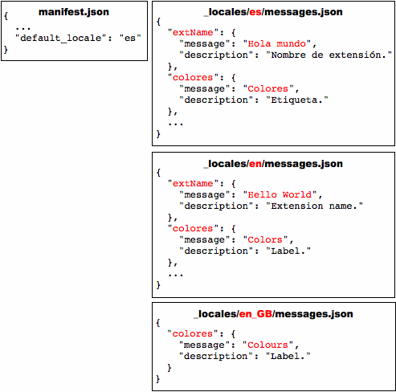

Use the chrome.i18n module to
get localized messages for the current locale,
from either the extension or its content script.
You can also use this module to get the languages that the browser accepts.
To simplify translating your extension,
internationalize it by
putting all its user-visible strings
in a file named messages.json.
For example, let's say you have an extension
with the files shown in the following figure:

To internationalize this extension,
put each user-visible string into a messages file.
For an extension that's in English,
the messages file can be at
_locales/en/messages.json.
Each message has a name.
The extension's manifest and JavaScript code
use this name to get the localized message.
The next figure shows an internationalized extension that has only English strings.

Important:
If an extension has a _locales directory,
the manifest
must define "default_locale".
Once an extension is internationalized,
translating it is simple.
You just copy messages.json,
translate it,
and put the copy into a new directory under _locales.
For example, to support Spanish,
just put the translated copy of messages.json
under _locales/es.
The following figure shows the extension with a new Spanish translation.

Some notes about internationalizing extensions:
Use only supported locales!
manifest.json,
refer to a string named messagename like this:
__MSG_messagename__
chrome.i18n.getMessage("messagename")
In each call to getMessage(),
you can supply up to 9 strings
to be included in the message.
See Examples: getMessage
for details.
messages.json,
each user-visible string has a name, a "message" item,
and an optional "description" item.
The name is a key
such as "extName" or "search_string"
that identifies the string.
The "message" specifies
the value of the string in this locale.
The optional "description"
provides help to translators,
who might not be able to see how the string is used in your extension.
For example:
{
"search_string": {
"message": "hello%20world",
"description": "The string we search for. Put %20 between words that go together."
},
...
}
Extensions can use all the locales that Google Chrome supports,
plus a few (such as en)
that let a single translation support multiple variations of a language
(such as en_GB and en_US).
Your extension can use any of the following locales:
am ar bg bn ca cs da de el en en_GB en_US es es_419 et fi fil fr gu he hi hr hu id it ja kn ko lt
lv ml mr nb nl or pl pt pt_BR pt_PT ro ru sk sl sr sv sw ta te th tr uk vi zh zh_CN zh_TW
You don't have to define every string for every locale
that your internationalized extension supports.
As long as the default locale's messages.json file
has a value for every string,
your extension will run no matter how sparse a translation is.
Here's how the extension system searches for a message:
en_GB),
the system first looks for the message in
_locales/en_GB/messages.json.
If that file exists and the message is there,
the system looks no further.
en_GB messages file
doesn't exist or doesn't contain the message,
the system looks in the en messages file.
If that file exists and the message is there,
the system looks no further.
_locales/en_GB/messages.json
nor _locales/en/messages.json contains the message,
the extension uses the message from
_locales/es/messages.json.
In the following figure, the message named "color" is in all three locales that the extension supports, but "extName" is in only two of the locales. Where a user running Google Chrome in US English sees the heading "Color", a user running it in British English sees "Colour". Both US English and British English users see the extension name "Hello World". Because the default language is Spanish, users running Google Chrome in any non-English language see the heading "Color" and the extension name "Hola mundo".
When you test translations, you might want to set your browser's locale. Here's how.
Set the language environment variable, and then launch Google Chrome. For example:
LANGUAGE=es ./chrome
You can find simple examples of internationalization in the examples/api/i18n directory. For a more complete example, see examples/extensions/news_i18n (compare it to examples/extensions/news). For other examples and for help in viewing the source code, see Samples.
The following code gets a localized message from the browser and displays it as a string. It replaces two placeholders within the message with the strings "string1" and "string2".
function getMessage() {
var message = chrome.i18n.getMessage("click_here", ["string1", "string2"]);
document.getElementById("languageSpan").innerHTML = message;
}
Here's how you'd supply and use a single string:
// In JavaScript code
status.innerText = chrome.i18n.getMessage("error", errorDetails);
// In messages.json
"error": {
"message": "Error: $details$",
"description": "Generic error template. Expects error parameter to be passed in.",
"placeholders": {
"details": {
"content": "$1",
"example": "Failed to fetch RSS feed."
}
}
}
For more information about placeholders, see the internationalization design doc.
The following code gets accept-languages from the browser and displays them as a string by separating each accept-language with ','.
function getAcceptLanguages() {
chrome.i18n.getAcceptLanguages(function(languageList) {
var languages = languageList.join(",");
document.getElementById("languageSpan").innerHTML = languages;
})
}